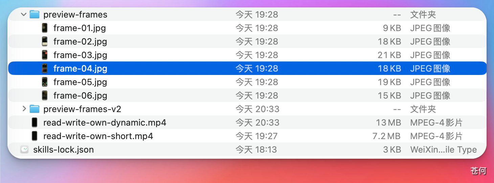
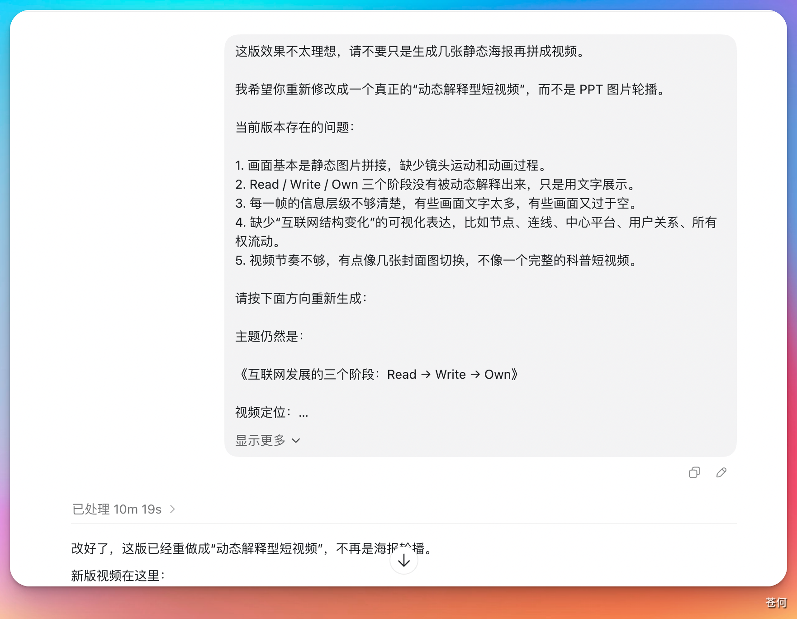

HyperFrames 和前段时间很火的 Remotion 都属于代码化的视频生成：
- Remotion：使用 React 写视频
- HyperFrames：使用 HTML、CSS 或 JS 做视频
如果你想做一些轻量化的视频，比如网页转视频、文档转视频等，那么使用 HyperFrames 就是一个非常不错的选择。
1. 安装插件#
打开 Codex 桌面 App 的左侧边栏，找到"插件和技能"。进入后搜索 HyperFrames 即可找到该插件，直接安装即可。

HyperFrames 也有对应的 Skill（技能），两者都可以使用。大家可以选择合适的或自己喜欢的方式进行安装。
2. 如何使用#
我直接给了它一本书的内容，然后让它根据这本书的内容去制作视频，它就会调用这个技能去完成对应的任务。

任务完成之后，它会告诉我们返回本地文件的地址，点击即可跳转查看具体内容。

如果你仔细观察，会发现实际上它是生成了几张 JPEG 格式的图片，然后将图片组装成视频。大概是这样一个过程。

第一次生成的视频可能并没有想象的那么完美，这时需要继续增加需求。
比如针对以下方面进行多次迭代，效果可能就会更好：
- 画面表现
- 生成的具体效果
- 每一页的文案、配色、背景等具体细节
这需要我们的耐心和一步一步的尝试。

技巧： 如果你有目标视频，可以直接把成品的视频效果发给它，让它模仿去制作，做出来的效果可能会更加符合要求。
如果你对于 Remotion 制作视频的方式感兴趣，那么我推荐王老师在 GitHub 上分享的开源项目 Remotion的skill，你可以进行参考学习。